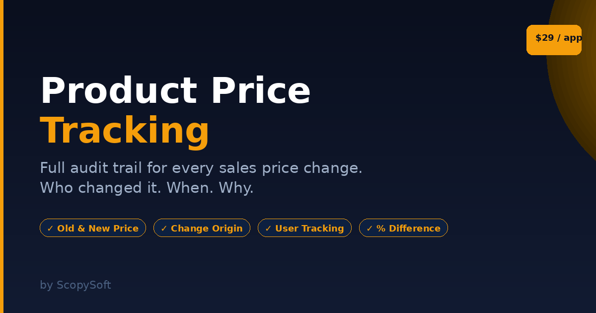
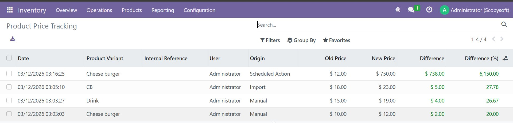
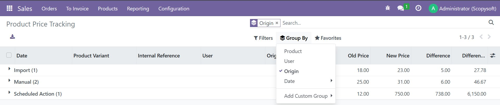
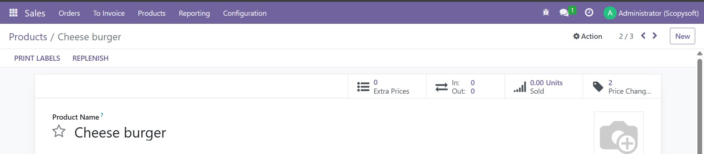
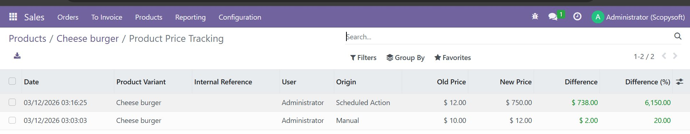
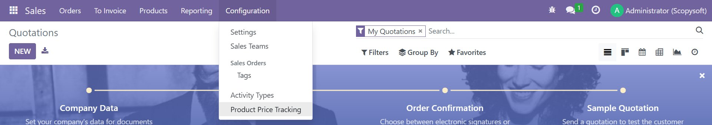

Product Price Tracking gives you a complete audit trail of every change made to your product's sales price. Know exactly who changed it, when it was changed, and where the change came from — automatically, with zero configuration.
| ✓ | Automatic tracking — Every sales price change is recorded instantly. Nothing to configure, nothing to enable. |
| ✓ | Old & New Price — See exactly what the price was before and after each change. |
| ✓ | Difference & % Change — Quickly see how much the price changed in value and percentage. |
| ✓ | User tracking — Know exactly which user made each change. |
| ✓ | Origin detection — Automatically detects whether the change was Manual, Import, Scheduled Action, and more. |
| ✓ | Smart button — Price change count visible directly on the product form. |
| ✓ | Price History tab — Inline history visible on the product form itself. |
| ✓ | Filter & Group By — Filter by origin, user, date. Group by product, origin, user, company. |
| ✓ | Export — Export all tracking records to Excel/CSV for reporting. |
| ✓ | Multi-company support — Tracks company per change in multi-company setups. |
| ✓ | Accessible from two menus — Inventory → Configuration and Sales → Configuration. |
Full tracking list — Manual, Import and Scheduled Action all detected automatically:

Group By Origin — see all changes organized by source:

Smart button on the product form — shows total price changes at a glance:

Click the smart button to see the full history for that product:

Accessible from Sales → Configuration menu:

The module automatically identifies where each price change came from:
| Origin | When it appears |
|---|---|
| Manual | User edits the sales price directly on the product form |
| Import | Price changed via CSV or Excel import |
| Scheduled Action | Price updated by an automated cron job |
| Button Action | Price changed by clicking a button in Odoo |
| Mass Update | Multiple products updated at the same time |
| Automated Process | Any other automated change not covered above |
| Custom Origin | Developers can pass a custom origin via context |
Install the module and start using Odoo normally. Every time a product's sales price changes, a record is automatically created. No setup required.
Access your tracking records from:
| Module Name | scopysoft_product_price_tracking |
| Version | 16.0.1.0.0 |
| License | OPL-1 |
| Author | ScopySoft |
| Dependencies | product, stock, sale |
| Odoo Online | ❌ Not available |
| Odoo.sh | ✅ Supported |
| On-Premise | ✅ Supported |
The smart button only appears after at least one price change has been recorded. Change the sales price and save — the button will appear immediately.
No. Due to Odoo's platform restrictions, third-party modules cannot be installed on Odoo Online (SaaS). This module works on Odoo.sh and self-hosted (On-Premise) installations only.
No — this module tracks the Sales Price (list_price) only. For tracking cost (standard_price) changes, check our companion module: Product Cost Tracking.
No — tracking begins from the moment the module is installed. Previous changes are not retroactively recorded.
Yes — use the export button (download icon) at the top of the tracking list to export to Excel or CSV.
For questions, issues or feature requests, contact us at: opeyemiajetunmobi9@gmail.com
We respond within 24–48 hours on business days.